Ремонт бетонных конструкций
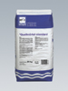
Расширяющийся раствор стандартныйQuellmortel standard
Cухой строительный раствор с небольшим расширением при схватывании. Усилен синтетическими волокнами. Выдерживает высокую нагрузку, водонепроницаем, устойчив к низким температурам и солям оттаивания. Очень хорошее сцепление с основой. Для ремонта цементной штукатурки, бетонных конструкций, каменных кладок и т.п. Благодаря отсутствию усадки при затвердевании, в один прием можно нанести слой толщиной до 100 мм. Полностью затвердевает через 24 часа после нанесения.
MG III по DIN 1053
Giscode ZP1
Расход: ок. 1,7 кг/л полого пространства
Упаковка: мешок 15 кг, 25 кг
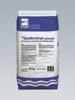
Расширяющийся раствор быстродействующийQuellmortel schnell
Сухой строительный раствор с небольшим расширением при схватывании.
Применяется аналогично Расширяющемуся раствору стандартному. Ускоренное затвердевание.
Через 5 – 6 часов после нанесения доступен для прохода.
MG III по DIN 1053
Giscode ZP 1
Расход: ок. 1,7 кг/л полого пространства
Упаковка: мешок 15 кг, 25 кг
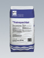
ФайншпахтельFeinspachtel
Сухой строительный раствор, модифицированный путем добавления полимеров. Водоотталкивающий, хорошее сцепление с основой. Устойчив к низким температурам и солям оттаивания. Универсальный ремонтный раствор для шпатлевки облицовочного бетона, бетонных конструкций, стенных и потолочных бетонных плит слоем до 5 мм. Используется для выравнивания под покраску. Giscode ZP1
Расход: ок. 1,7 кг/м2 на 1 мм слоя
Упаковка: мешок 25 кг
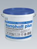
Коррохафт ПлюсKorrohaft plus
Двухкомпонентный минеральный шлам, в высокой степени улучшенный полимерами. Используется как антикоррозийное покрытие для арматурной стали и как адгезионный слой для усиления сцепления между основанием и репрофилирующим раствором.
Компонент А: Giscode ZP 1 Компонент В: Giscode D 1
Расход: в качестве антикоррозионного покрытия - ок.100 г/м.п.
в качестве адгезионного слоя - ок. 1 кг/м2
Хранение: в сухом и прохладном месте, беречь от мороза.
Упаковка: ведро 3,5 кг
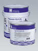
Эпоксан ELHEpoxan ELH
2-компонентный мягко эластичный материал на основе эпоксидной смолы. После затвердевания очень эластичен. Обладает исключительно высокой адгезией также к влажному бетону. Совместим с питьевой водой. Химически устойчив ко многим агрессивным средам. Устойчив к низким температурам и солям оттаивания. Практически не даёт усадки, не оставляет водяных пятен. Применяется как эластичное, стойкое к истиранию покрытие бетона, железобетона, предварительно напряжённого железобетона для защиты от нефтехимических продуктов и сточных вод всех видов (также, смешанный с мелким гравием или кварцевым песком). Может применяться в заводских цехах, на погрузо-разгрузочных площадках, балконах, террасах, пешеходных переходах. Применяется в системах питьевого водоснабжения и канализации. Применяется также для эластичной запрессовки трещин и для нагнетания в неплотные рабочие швы.
Испытан по ZTV - SIB 90
Компонент А: Giscode RE 1. Компонент B: Giscode RE 3
Расход: 1,1 кг/литр полого пространства
Хранение: в сухом и прохладном месте, беречь от мороза.
Упаковка: Комп. А - 2,5 кг, 5 кг, Комп. В - 2,5 кг, 5 кг.
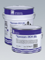
Эпоксан IKHEpoxan IKH
2-компонентный материал на основе эпоксидной смолы, обладающий очень низкой вязкостью. Не содержит растворителей. Наносится путем нагнетания. Укрепляет пористую и слабую основу. Нанесённый Эпоксан IKH длительно устойчив к старению, погодному воздействию, воде, горюче-смазочным материалам. Для запрессовывания трещин силовым замыканием в высотном и подземном строительстве, а также для дополнительного нагнетания в неплотные швы. Совместим с питьевой водой.
Допускается нанесение во влажные и заполненные водой трещины. При напорной воде обязательно использовать Пену полиуретановую Вассерстоп перед нанесением Эпоксана IKH.
Компонент А: Giscode RE 1, Компонент В: Giscode RE 1
Расход: ок. 1,1 кг/литр полого пространства
Хранение: в сухом и прохладном месте, беречь от мороза.
Упаковка: Комп. А - 7 кг, Комп. В - 3,5 кг.
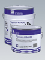
Эпоксан KSAEpoxan KSA
2-компонентный материал на основе эпоксидной смолы, обладающий низкой вязкостью. Устойчив к низким температурам и солям оттаивания. Применяется для покрытия особенно прочных, водонепроницаемых поверхностей гидроузлов, песколовок, водобойных колодцев и плотин, а также, для покрытия дна каналов, сточных трубопроводов и очистных сооружений. Для конструкций, подвергающихся высокой механической нагрузке, таких как полы производственных помещений и погрузочных платформ. Совместим с питьевой водой. Используется для изготовления эпоксидных и эпоксидно-цементных растворов.
Компонент А: Giscode RE 1 Компонент В: Giscode RE 1
Расход: по потребности
Хранение: в сухом и прохладном месте, беречь от мороза.
Упаковка: Комп. А - 7 кг, Комп. В - 3,5 кг.
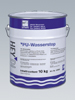
Пена полиуретановая ВассерстопPU Wasserstopp
Инъекционная пена на основе полиуретана. Используется совместно с Ускорителем Вассерстоп. Низко вязкая. Не содержит растворителей. Для остановки поступающей под давлением воды и для герметизации водопроводящих трещин и полостей в бетоне и каменной кладке перед их запрессовкой с помощью Эпоксан ELH или Эпоксан IKH. При реакции с водой сильно расширяется в объеме и образует пену с закрытыми порами. Наносится путем нагнетания.
Расход: по потребности.
Хранение: в сухом и прохладном месте, беречь от мороза.
Упаковка: банка 10 кг.
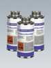
Ускоритель ВассерстопPU Beschleuniger
Не содержащий растворителей ускоритель. Применяется для регулировки времени реакции Пены полиуретановой Вассерстоп с водой.
Расход: по потребности
Упаковка: банка 1 кг.
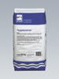
ИнжектмортельInjektmoertel
Быстро затвердевающий сухой раствор на основе цемента. Модифицирован разжижающими и расширяющими добавками. Применяется для заливки швов (исключая температурные швы) и полостей, а также для запрессовки трещин шириной более 1 мм.
Giscode ZP1
Расход: ок.1,8 кг/л полого пространства
Упаковка: мешок 25 кг
 Шнельэштрих
Шнельэштрих
Schnellestrich
Быстро застывающий, безусадочный сухой раствор для ремонта бетонных полов (стяжек) с увеличенным временем выработки. Для использования внутри и снаружи помещения, в т.ч. во влажных условиях. Повышенная конечная прочность. Несмотря на увеличенное время жизнеспособности, уложенный раствор уже через 3 часа доступен для прохода и через короткое время допускает нанесение последующих покрытий. Допускает механизированное нанесение. Для создания монолитных полов (стяжек), бесшовных полов на разделительных и изолирующих слоях, а также полов с подогревом. Используется при проведении срочного ремонта бетонных полов на промышленных объектах. Estrichgü t e ZE 65 Giscode ZP1
Расход: 1,8 кг/м2/ на 1 мм слоя
Хранение: в сухом и прохладном месте
Упаковка: мешок 25 кг
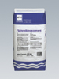
Шнельэштрих КонцентратSchnellestrich Konzentrat
Специальное вяжущее средство для изготовления быстро схватывающихся, высокопрочных и быстро допускающих укладку последующих покрытий цементных стяжек. Для использования внутри и вне помещений, а также в сырых мокрых помещениях. Сокращает время схватывания стяжки, обеспечивает безусадочность и высокую конечную прочность стяжки. Уже прим. через 3 часа стяжка доступна для прохода и прим. через 24 - 48 часов допускает нанесение последующих покрытий. Для связанных стяжек, стяжек на разделительном и стяжек на изоляционном слое, а также стяжек полов с подогревом в условиях ограниченного времени для укладки. Giscode ZP1.
Расход: на прим. 25 кг средства 100 - 125 кг песка для стяжек 0/8 (DIN 426).
Хранение: в сухом и прохладном месте.
Упаковка: мешок 25 кг.